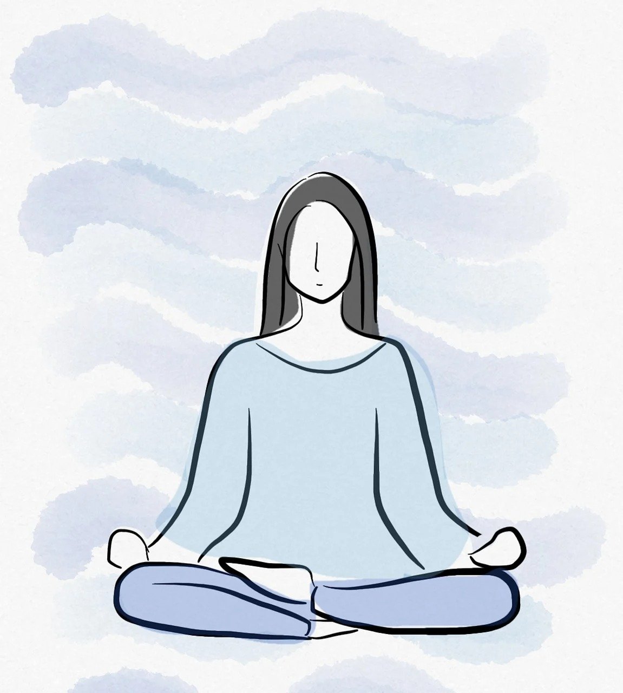

RELATED ARTICLES
What is Mental Health?
Mental health is all about how people think, feel, and behave. Mental health specialists can help people with
depression, anxiety, bipolar disorder, addiction, and other conditions that affect their thoughts, feelings,
and behaviors.
Mental health can affect daily living, relationships, and physical health. Factors in people's lives,
interpersonal connections, and physical factors can contribute to mental ill health.
Looking after mental health can preserve a person's ability to enjoy life. Doing this involves balancing life
activities, responsibilities, and efforts to achieve psychological resilience.

According to WORLD
HEALTH ORGANIZATION(WHO)
-
The WHO states that mental health is “more than just the absence of mental disorders or
disabilities.” Peak mental health is not only about managing active conditions but also looking
after ongoing wellness and happiness.
-
It also emphasizes that preserving and restoring mental health is crucial individually and at a
community and society level.
-
In the United States, the National Alliance on Mental Illness estimates that almost 1 in 5 adults
experience mental health problems each year.
-
In 2020, an estimated 14.2 million adults in the U.S., or about 5.6%, had a serious psychological
condition, according to the National Institute of Mental Health (NIMH).
Risk factors for mental health conditions
Everyone is at some risk of developing a mental health disorder, regardless of age, sex, income, or
ethnicity. In the U.S. and much of the developed world, mental disorders are one of the leading causes
of disability.
Social and financial circumstances, adverse childhood experiences, biological factors, and underlying
medical conditions can all shape a person's mental health.
Many people with a mental health disorder have more than one condition at a time.
It is important to note that good mental health depends on a delicate balance of factors and that several
elements may contribute to developing these disorders.
The following factors can contribute to mental health disruptions.
-
Continuous social and economic pressure
-
Having limited financial means or belonging to a marginalized or persecuted ethnic group can increase
the risk of mental health disorders.
-
A 2015 Indian study Trusted Source describes several socioeconomic causes of mental
health conditions, including poverty and living on the outskirts of a large city.
The researchers also described flexible (modifiable) and inflexible (nonmodifiable) factors that affect the
availability and quality of mental health treatment for certain groups.
Modifiable factors for mental health disorders include:
Nonmodifiable factors include:
- gender
- age
- ethnicity
- nationality
The researchers found that being female increased the risk of low mental health status by
nearly 4 times. People with a “weak economic status” also scored highest for mental health
conditions in this study.
Childhood adversity
Several studiesTrusted Source support that adverse childhood experiences such as child abuse, parental loss,
parental separation, and parental illness significantly affect a growing child's mental and physical health.
There are also associations between childhood abuse and other adverse events with various psychotic
disorders. These experiences also make people vulnerable to post-traumatic stress disorder (PTSD).
Biological
The NIMH suggests that genetic family history can increase the likelihoodTrusted Source of mental health
conditions as specific genes and gene variants put a person at higher risk.
However, many other factors contribute to the development of these disorders.
Having a gene associated with a mental health disorder does not guarantee that a condition will develop.
Likewise, people without related genes or a family history of mental illness can still have mental health
issues.
Chronic stress and mental health conditions such as depression and anxiety may develop due to underlying
physical health problems, such as cancer, diabetes, and chronic pain.
Types of mental health disorders
Specific mental disorders are grouped together due to features they have in common. Some types of mental
illness are as follows:
- anxiety disorders
- mood disorders
- schizophrenia disorders
Anxiety disorders
According to the Anxiety and Depression Association of America, anxiety disorders are the most common mental
illness.
People with these conditions have severe fear or anxiety related to certain objects or situations. Most
people with an anxiety disorder try to avoid exposure to whatever triggers their anxiety.
Below are some examples of anxiety disorders.
Gneralized anxiety disorder
Generalized anxiety disorder (GAD) involves excessive worry or fear that disrupts everyday living.
People may also experience physical symptoms, including:
- restlessness
- fatigue
- poor concentration
- tense muscles
- interrupted sleep
A bout of anxiety symptoms does not necessarily need a specific trigger in people with GAD.
They may experience excessive anxiety when encountering everyday situations that do not pose a direct danger,
such as chores or appointments. A person with GAD may sometimes feel anxiety with no trigger at all.
Find out
more
about GAD here.
Panic disorder
People with a panic disorder experience regular panic attacks involving sudden, overwhelming terror or a
sense of imminent disaster and death.
more about panic
attacks here.
Phobias
There are different types of phobia:
-
Simple phobias:
These may involve a disproportionate fear of specific objects, scenarios, or animals. A fear of
spiders is a typical example.
-
Social phobia:
Sometimes known as social anxiety, this is a fear of being subject to the judgment of others. People
with social phobia often restrict their exposure to social environments.
-
Agoraphobia:
This term refers to a fear of situations where getting away may be difficult, such as being in an
elevator or a moving train. Many people misunderstand this phobia as the fear of being outside.
Phobias are deeply personal, and doctors do not know every type. There could be thousands of phobias, and
what may seem unusual to one person can be a severe problem that dominates daily life for another.
OCD
People with obsessive-compulsive disorder (OCD) have obsessions and compulsions. In other words, they
experience constant, stressful thoughts and a powerful urge to perform repetitive acts, such as handwashing.
PTSD
PTSD can occur after a person experiences or witnesses an intensely stressful or traumatic event. During this
type of event, the person thinks that their life or other people's lives are in danger. They may feel afraid
or that they have no control over what is happening.
These sensations of trauma and fear may then contribute to PTSD.
-
Mood disorders
People may also refer to mood disorders as affective disorders or depressive disorders.
people with these conditions have significant mood changes, generally involving either mania, a
period of high energy and joy, or depression. Examples of mood disorders include:
-
Major depression:
An individual with major depression experiences a constant low mood and loses interest in
activities and events that they previously enjoyed (anhedonia). They can feel prolonged
periods of sadness or extreme sadness.
Bipolar disorder: A person with bipolar disorder experiences unusual changesTrusted Source
in their mood, energy levels, levels of activity, and ability to continue with daily life.
Periods of high mood are known as manic phases, while depressive phases bring on low mood.
Read more about the different types of bipolar here.
Seasonal affective disorder (SAD): Reduced daylight during the fall, winter, and early
spring months triggers this type of major depressionTrusted Source. It is most common in
countries far from the equator.
-
Schizophrenia disorders
The term schizophrenia often refers to a spectrum of disorders characterized by psychotic
features and other severe symptoms. These are highly complex conditions.
According to the NIMH, signs of schizophrenia typically develop between the ages of 16 and
30Trusted Source. The individual will have thoughts that appear fragmented and may also find
it hard to process information.
Schizophrenia has negative and positive symptoms. Positive symptoms include delusions,
thought disorders, and hallucinations, while withdrawal, lack of motivation, and a flat or
inappropriate mood are examples of negative symptoms.
Early signs
No physical test or scan reliably indicates whether a person has developed a mental illness. However, people
should look out for the following as possible signs of a mental health disorder:
-
withdrawing from friends, family, and colleagues
- avoiding activities they would normally enjoy
- sleeping too much or too little
- eating too much or too little
- feeling hopeless
- having consistently low energy
- mood-altering substances, including alcohol and nicotine, more frequently
- displaying negative emotions
- being confused
- being unable to complete daily tasks, such as getting to work or cooking a meal
- having persistent thoughts or memories that reappear regularly
- thinking of causing physical harm to themselves or others
- hearing voices
- experiencing delusions
Diagnosis
Diagnosing a mental health disorder requires a multi-step process. A doctor may begin by looking at a
person's medical history and performing a thorough physical exam to rule out physical conditions or issues
that may be causing the symptoms.
No medical tests can diagnose mental disorders. However, doctors may order a series of laboratory tests such
as imaging exams and bloodwork to screen for other possible underlying causes.
They will also do a psychological evaluation. This includes asking about a person's symptoms, experiences,
and how these have impacted their lives. Sometimes, the doctor may ask a person to fill out mental health
questionnaires to get an idea about a person's thoughts, feelings, and behavior patterns.
Most mental health specialists use the American Psychiatric Association's (APA) Diagnostic and Statistical
Manual of Mental Disorders (DSM-5) to make a diagnosis. This manual contains descriptions and specific
criteria to qualify for a diagnosis.
Treatment
There are various methods for managing mental health problems. Treatment is highly individual, and what works
for one person may not work for another.
Some strategies or treatments are more successful in combination with others. A person with a chronic mental
disorder may choose different options at various stages in their life.
The individual needs to work closely with a doctor who can help them identify their needs and provide
suitable treatment.
Below are some treatment options for people with mental ill health.
Psychotherapy, or talking therapies
This type of treatment takes a psychological approach to treating mental illness. Cognitive behavioral
therapy (CBT), exposure therapy, and dialectical behavior therapy are examples.
Psychiatrists, psychologists, psychotherapists, and some primary care physicians carry out this treatment.
It can help people understand the root of their mental illness and start to work on more healthful thought
patterns that support everyday living and reduce the risk of isolation and self-harm.
Read more about psychotherapy here.
Medication
Some people take prescribed medications, such as antidepressants, antipsychotics, and anxiolytic drugs.
Although these cannot cure mental disorders, some medications can improve symptoms and help a person resume
social interaction and a routine while working on their mental health.
Some of these medications boost the body's absorption of feel-good chemicals, such as serotonin, from the
brain. Other drugs either boost the overall levels of these chemicals or prevent their degradation or
destruction.
Find out more about
antidepressant medications here.
Self-help
A person coping with mental health difficulties may need to change their lifestyle to facilitate wellness.
Such changes can include reducing alcohol intake, sleeping more, and eating a balanced, nutritious diet.
People may need to take time away from work or resolve issues with personal relationships that may be
causing damage to their mental health.
People with conditions such as anxiety or depressive disorder may benefit from relaxation techniques, which
include deep breathing, meditation, and mindfulness.
Having a support network, whether via self-help groups or close friends and family, can also be essential to
recovery from mental illness.
Suicide prevention
If you know someone at immediate risk of self-harm, suicide, or hurting another person:
Ask the tough question: “Are you considering suicide?”
Listen to the person without judgment.
Call "TELE MANAS" helpline number
14416
or
1-800 8914416
to communicate with a trained crisis
counselor.
Stay with the person until professional help arrives.
Try to remove any weapons, medications, or other potentially harmful objects.
Click here for more links and local resources.